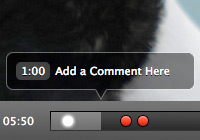
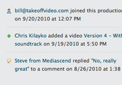
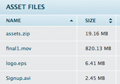

Simple Video Review & Approval
Still using email, ftp, YouTube, or Vimeo to collaborate during post production? Then you'll love Takeoff.
Highlights
-

Video Feedback
Write comments with frame-by-frame precision.
-

Privacy
Only people you invite ever have access to your videos.
-

File Sharing
Share files like scripts and soundtracks with teammates.
-
Everywhere
Takeoff works on the web and mobile devices.
What They're Saying
Takeoff saves me time, heartache, and makes me look better for my clients.
Adam Kaplan - ASK Media ProductionsIt is everything I need in a video collaboration tool.
Michael Hanrahan - President, The Ocean ChannelIt's so easy...there's really nothing to learn. It just works.
Eric Rodriguez - VideographerAfter Takeoff, things went from frustrating to pleasant.
Harry Dollard - InTime SolutionsWe don't have to ship tapes or transfer huge video files!
Joel Connable - Travel TV NewsWhat a great weapon in my arsenal. It's so easy and so worth it.
Jeff Barnes - Final Cutz
Takeoff Versus
| Takeoff | ||
|---|---|---|
| Send large files | ||
| Avoid transferring video files just to watch | ||
| Know everyone can watch your videos | ||
| Easily write comments for specific moments | ||
| Keep all files in a single organized place | ||
| Know what video is the latest | ||
| Bottom line: Takeoff never stops you from using email. But it works much better than email for many aspects of video production. | ||
| Takeoff | YouTube | |
|---|---|---|
| Limit video duration | ||
| Ad free | ||
| Easily write comments for specific moments | ||
| Keep all asset files in a single organized place | ||
| Permit downloading of videos | ||
| Private by nature | ||
| Add videos without sending out new links | ||
| Bottom line: YouTube (and similar sites) was built to show video once it's completed, not while it's still being produced. Takeoff was built from the ground up to be used during production, so it has many crucial features YouTube lacks. Use YouTube...just use it after Takeoff :) | ||
| Takeoff | FTP | |
|---|---|---|
| Know everyone can watch your videos | ||
| Easily write comments for specific moments | ||
| Keep communication in a centralized place | ||
| Avoid transferring video files just to watch | ||
| Easily write comments for specific moments | ||
| Automatic file management | ||
| No special programs needed | ||
| Bottom line: FTP lets you share large files but it's a huge hassle. Takeoff eliminates all the problems that FTP presents. Good riddance! | ||
| Takeoff | FCP Server | |
|---|---|---|
| Affordable for anyone | ||
| Nothing to install | ||
| Doesn't require a Mac | ||
| Easily write comments for specific moments | ||
| Visual customizations | ||
| Works with any editing program | ||
| Bottom line: Final Cut Server was built for larger production houses and is overkill for most of us. Takeoff is simple, inexpensive, and easy to learn. | ||